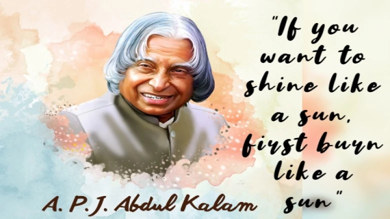
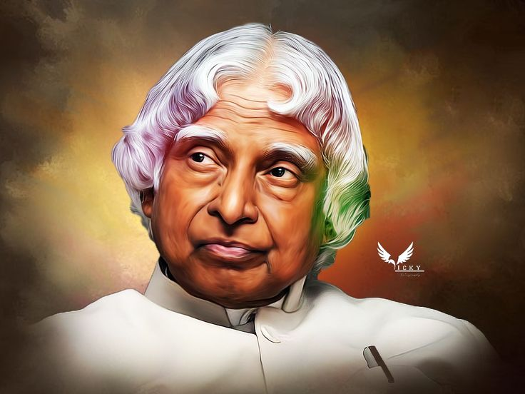

Early Life & Childhood
Dr. A.P.J. Abdul Kalam was born on 15 October 1931 in Rameswaram, Tamil Nadu. He grew up in a modest family. During his childhood, he helped support his family by distributing newspapers while continuing his education.
THE PEOPLE'S PRESIDENT
A Life That Continues to Inspire Millions
Discover His Journey
Dr. A.P.J. Abdul Kalam was an Indian aerospace scientist, inspiring teacher and the 11th President of India. He dedicated his life to science, education and national development.
Born on 15 October 1931 in Rameswaram, Tamil Nadu, he rose from a humble childhood to become one of India's most respected and admired personalities.
His work in India's space and missile programmes, along with his passion for inspiring young minds, made him a symbol of knowledge, dedication and hope.
Even after his presidency, he continued teaching students and encouraging them to dream big and work hard.
A remarkable journey of dreams, dedication and determination.
Dr. A.P.J. Abdul Kalam was born on 15 October 1931 in Rameswaram, Tamil Nadu. He grew up in a modest family. During his childhood, he helped support his family by distributing newspapers while continuing his education.
His passion for science and learning led him to study Physics at St. Joseph's College. Later, he specialized in Aeronautical Engineering at the Madras Institute of Technology in 1957. His dream was to contribute to aviation and science.
Kalam worked with DRDO and ISRO, contributing to India's space research and missile development. As Project Director, he led the SLV-III project, which successfully placed the Rohini satellite into orbit in July 1980.
On 25 July 2002, he became the 11th President of India. During his presidency, he inspired millions through his vision for national development, education and scientific progress.
Beyond science and public service, Kalam loved teaching and writing. His famous books include Wings of Fire, Ignited Minds and India 2020. He dedicated much of his time to inspiring young students.
On 27 July 2015, Dr. Kalam passed away while delivering a lecture to students at IIM Shillong. His dedication to education, science and humanity continues to inspire generations.

Important moments that shaped the life of a visionary.
Born on 15 October in Rameswaram, Tamil Nadu.
Specialized in Aeronautical Engineering at Madras Institute of Technology.
Led the SLV-III project that successfully placed the Rohini satellite into orbit.
Received India's highest civilian honour, the Bharat Ratna.
Became the 11th President of India.
Passed away on 27 July while inspiring students at IIM Shillong.
“
Dream, dream, dream. Dreams transform into thoughts and thoughts result in action.